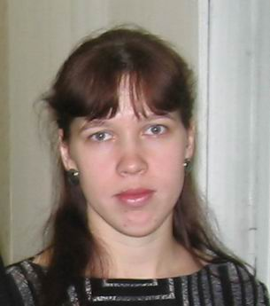
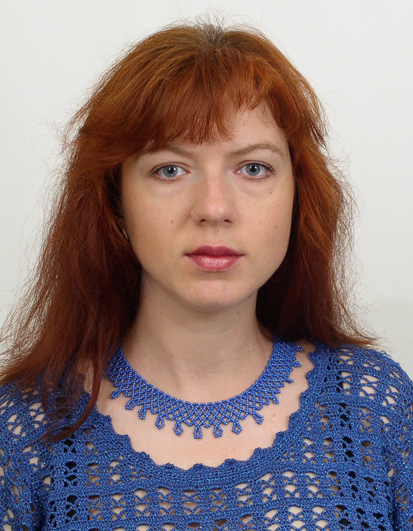

Авторы
Широкопетлева Мария Сергеевна
Cтарший преподаватель кафедры ПИ
Стаж преподавания - с 1997 года.
Научные интересы - системы искусственного интеллекта
Черепанова Юлия Юрьевна

Старший преподаватель кафедры ПИ
Стаж преподавания с 2001 года.
Научные интересы - компьютерная лингвистика
Мазурова Оксана Алексеевна

к.т.н., доцент кафедры ПИ
Стаж преподавания с 1999 года.
Научные интересы - системы поддержки принятия решений, базы данных, базы знаний.